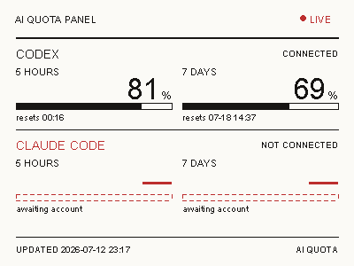

7 DAYS LEFT76%
读取真实剩余量
复用 Codex CLI 已有的 ChatGPT OAuth 会话，读取 5 小时和 7 天窗口，并显示重置时间，不做本地估算。
nRF52811 · BLE · E-INK
一块闲置的三色电子价签，实时显示 Codex 的 5 小时与 7 天剩余配额。Mac 自动读取本地登录状态、生成画面，再通过蓝牙写入墨水屏。

它解决什么
配额本来藏在命令行和账号接口里。这个项目把它变成桌面上的常驻信息：安静、低功耗，也不需要另一块持续发光的屏幕。
复用 Codex CLI 已有的 ChatGPT OAuth 会话，读取 5 小时和 7 天窗口，并显示重置时间，不做本地估算。
Mac 使用 Pillow 把页面渲染为两个 15,000 字节的 1-bit 图层，再按固件协议传给 SSD1619 三色屏。
使用 macOS 原生 launchd，每 30 分钟刷新一次。无需常驻 Terminal，也不需要额外安装桌面 App。
工作原理
现有 nRF52811 设备没有 Wi-Fi。把网络请求和图像渲染留在 Mac 上，反而让整个方案更简单，也不需要修改已经稳定工作的 BLE 固件。
只读取已有 OAuth 会话，不把 token 写入仓库或日志。
计算剩余比例，排版数字、进度条和重置时间。
使用协商后的 244 字节 MTU，分块写入 nRF52811。
断开蓝牙后无需持续供电刷新，信息仍留在屏幕上。
数据请求直接使用 Codex 已有登录状态。项目不会保存新的密钥，也不会上传对话内容。
只有数据获取和蓝牙连接成功后才会清屏。网络或扫描失败，不会把墨水屏留成空白。
安装与运行
给 nRF52811 电子价签刷入 EPD-nRF5_DYC 固件，并确认广播名以 NRF_EPD 开头。
创建虚拟环境并安装 Bleak 与 Pillow。先用 dry-run 生成本地预览。
运行项目提供的安装脚本，launchd 会立即更新一次，此后每 30 分钟执行。
# 下载项目 $ git clone https://github.com/askfanxiaojun/epd-ai-quota-display $ cd epd-ai-quota-display # 创建环境并生成预览 $ python3 -m venv .venv $ .venv/bin/pip install -r requirements.txt $ .venv/bin/python epd_status.py --dry-run # 安装每 30 分钟自动更新 $ chmod +x scripts/*.sh $ ./scripts/install-launchagent.sh Installed com.local.epd-ai-quota-display
完全开源
仓库包含可运行脚本、中文教程、BLE 协议说明、设计稿、故障排查和真实硬件验证记录。